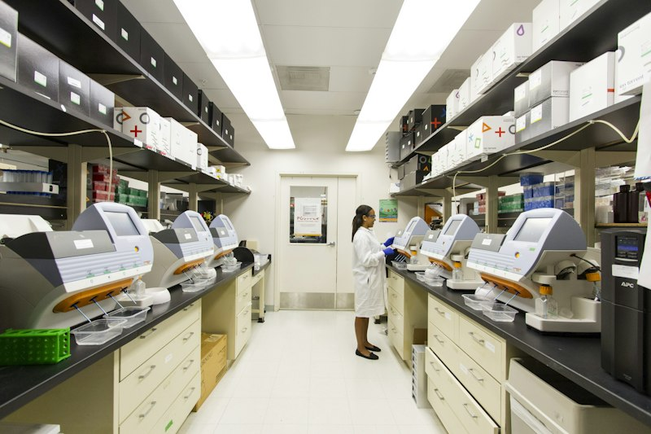

Our Webinars (KNCV Webinar Series)
Watch recorded expert presentations, download slide decks, and register for upcoming live technical briefings hosted by KNCV and global TB partners.
Featured & Upcoming Sessions
Join our interactive technical sessions or catch up on past clinical panels.

Digital Adherence Technologies in High-Burden Settings
Global DAT Task Force panel on scaling up smart pillboxes and video-supported treatment across decentralized clinics.
Register for Free →People-Centred TB Service Delivery in Primary Care
Integrating patient counseling with community support and psychosocial services.
View details & slides →Webinar Archive & Recordings

42:10Rapid Molecular Testing in Hard-to-Reach Areas
GeneXpert and Truenat battery setups and peripheral laboratory workflows.
 55:00
55:00
Community-Led Monitoring for TB Care
Empowering local advocacy groups and civil society scorecards.
Using Routine TB Data for Programme Quality
DHIS2 dashboards, quarterly reviews, and cascade indicators.
 49:30
49:30
Financing Transition to Short-course DR-TB
Cost-effectiveness, procurement, and Global Fund grant support.
 46:20
46:20
Simple One-Step (SOS) Stool Testing for Childhood TB
Non-invasive paediatric molecular diagnosis without centrifugation.
AI-Powered Chest X-Ray Triage (CAD4TB) in Mobile Vans
Threshold calibration and active case-finding workflows.